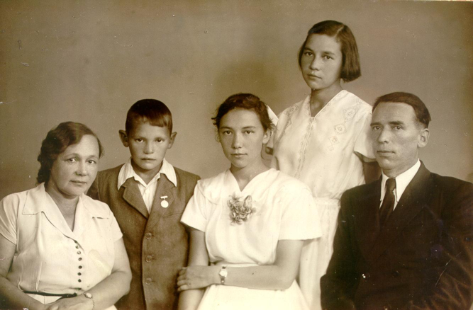
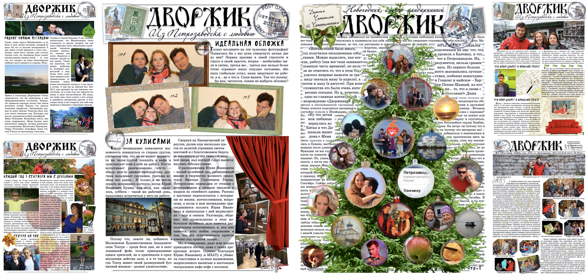
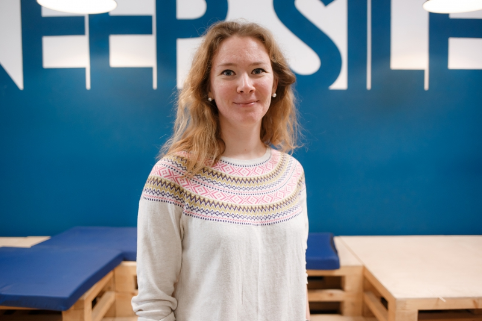
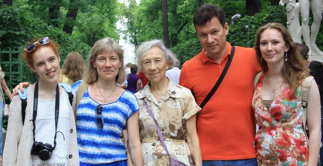
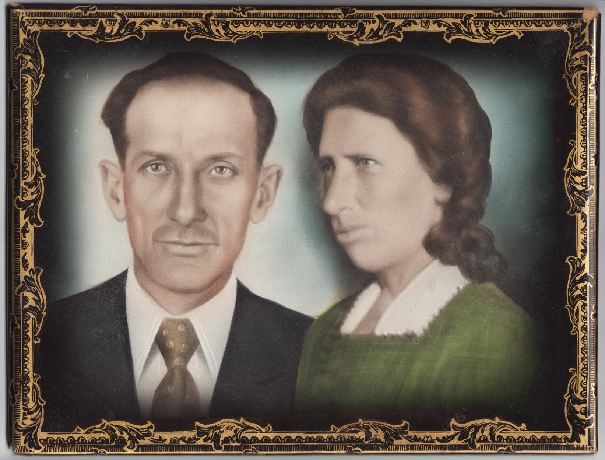

Истории
Воспоминания Аллы Басс (Дворжицкой-Лариной) и других членов семьи о родных, детстве, школе и важных событиях.
Перейти к историям«Дворжики» — это Александр, Ирина и Дарья Дворжицкие. Здесь собраны истории нашего рода, воспоминания старших, фотографии разных лет и номера семейного журнала «Дворжик».
Пять разделов семейной памяти — от воспоминаний и публикаций до видео и фотографий.

Воспоминания Аллы Басс (Дворжицкой-Лариной) и других членов семьи о родных, детстве, школе и важных событиях.
Перейти к историям
Семейный журнал «Дворжик»: классические выпуски 2007–2012 годов и новые номера 2013–2014 годов в формате PDF.
Читать журналы

Поздравления, семейные праздники, стихи в исполнении Александра Дворжицкого и другие видеозаписи разных лет.
Смотреть видео
Фотографии из семейных альбомов Басс, Дворжицких и Кузьменко — люди и события XX века.
Смотреть фотоЭтот сайт — продолжение семейного дела. Долгие годы воспоминания старших хранились в письмах, тетрадях и на страницах журнала «Дворжик». Теперь они собраны в одном месте, чтобы их могли читать дети, внуки и правнуки.
Большинство историй написаны Аллой Анатольевной Басс (Дворжицкой, Лариной) — мамой, бабушкой и хранительницей памяти рода. Мы бережно сохраняем её тексты и дополняем архив новыми материалами.